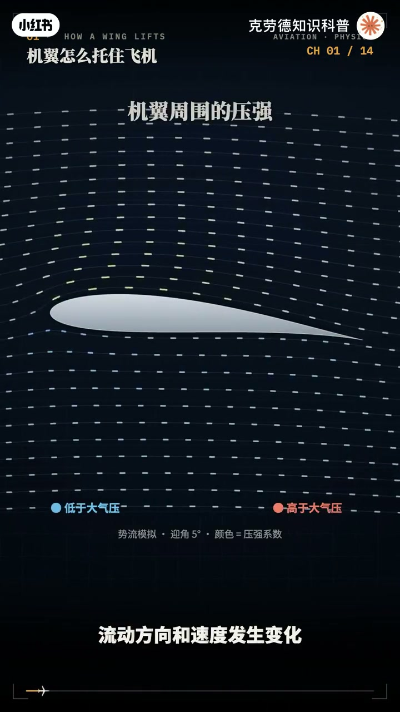
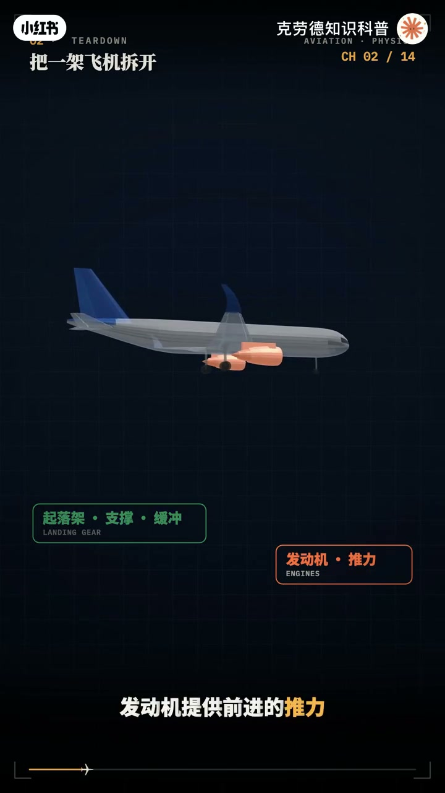
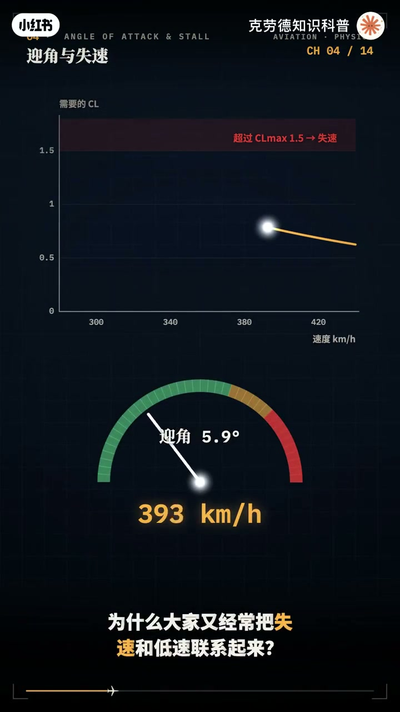
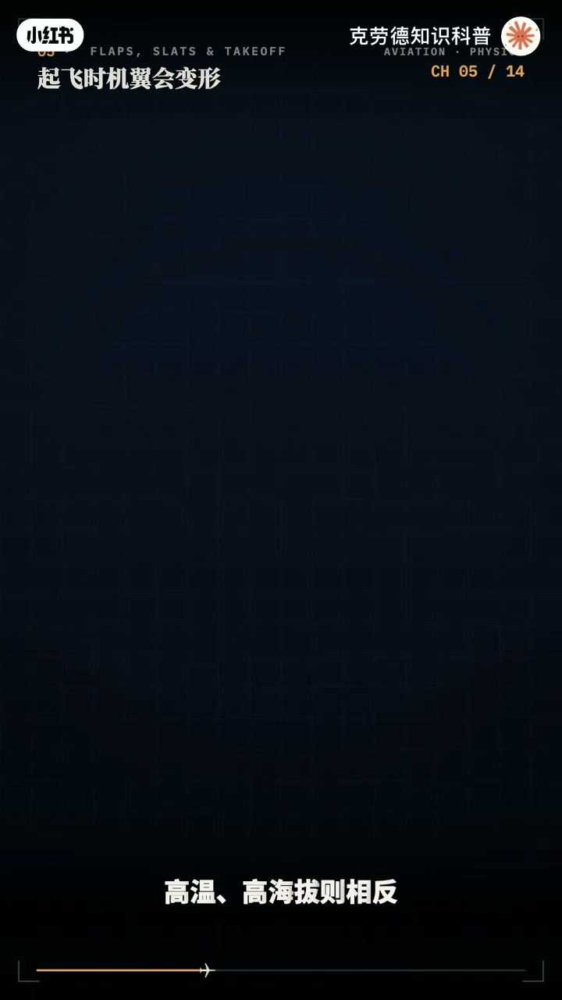
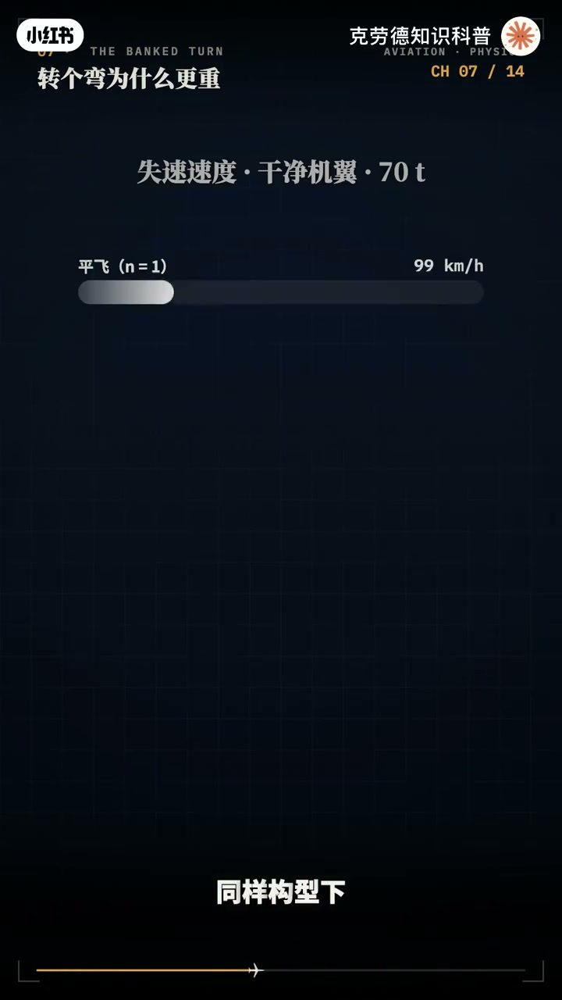
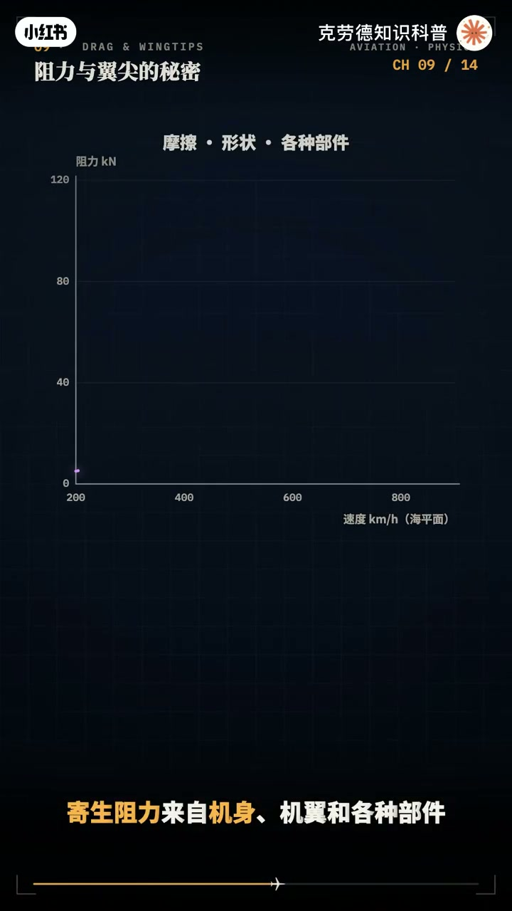
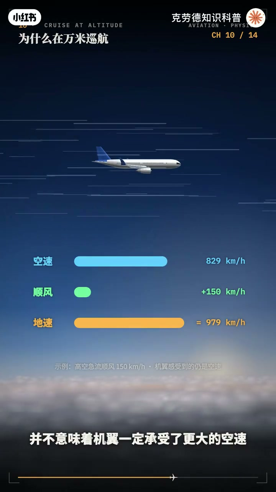
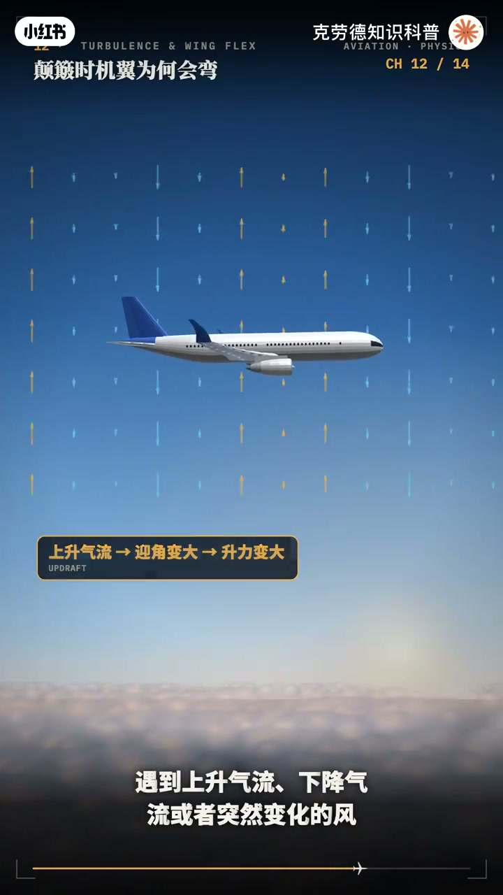
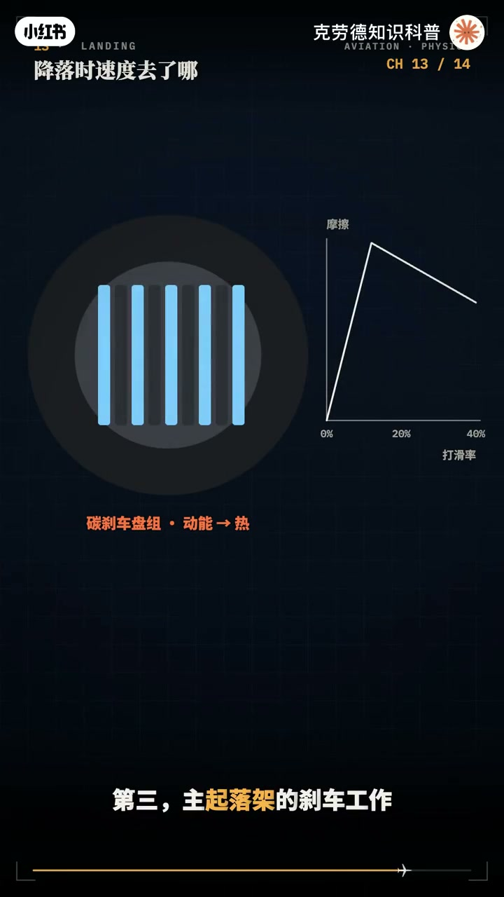

内容要点
「✈️飞机硬核科普，飞机飞行原理」教程要点：一架70吨的飞机靠两片机翼 → 把自己拖到1万多米的高空 → 以每小时800多公里的速度飞行 → 可把重量平均到机翼面积上；详见正文。
知识结构
一架70吨的飞机靠两片机翼
只需220公里
这就是增压与空调系统的工作
- 5.7000%
- 0.78马赫
一架70吨的飞机靠两片机翼
00:00–04:37一架70吨的飞机靠两片机翼
一架70吨的飞机靠两片机翼；把自己拖到1万多米的高空；以每小时800多公里的速度飞行；可把重量平均到机翼面积上；拖住它所需的压强差；只有海平面大气压的6%左右；发动机在向后吹风；飞机却能向上爬；转个弯机翼还得额外处理；就算发动机全部停转；它也能继续滑翔；这架飞机里；藏着压强 动量 能量；和控制的完整物理；这七视频从起飞到降落；疑似把飞机抢跑；先看四股力；重力向下；升力拖住飞机；发动机提供推力；空气带来阻力；匀速平直飞行时；升力大致等于重量；推力大致等于阻力；关键是机翼；空气绕过机翼时；流动方向和速度发生变化；机翼周围形成不同的压强；把整个表面上的压强作用加起来；就得到机翼受到的合力；从机翼看；是上下表面的压强；分布在拖住它；从空气看；是机翼让气流整体向下偏转；空气给机翼一个向上的反作用力；两种说法；讲的是同一件事；很多人听过一个解释；上面的路长；空气为了和下面同时到达；只好跑得更快；但上下两股空气；并没有必须同时到达的约定；看模拟；同一时刻出发的一排空气；走上表面的那一半；反而比下面的先到后面；机翼的形状；和它迎着气流的角度；共同决定周围怎样流动；对称机翼也能产生升力；合适的飞机还能倒着飞；真正要看清的；是气流怎么转弯；压强怎么分布；接下来；拆开一架常规布局的双发客机；中间是机身；里面装着驾驶舱；客舱和货舱；两侧是机翼；大部分升力从这里产生；机翼内部有纵向的翼梁；横向的翼类和外面的蒙匙；它们一起把空气的力量；传到中央翼核；再传给机身；机翼还装着油箱；飞行时；翼下的空气向上拖；燃油的重量向下压；翼内燃油能减轻一部分；向上弯曲的载荷；按胶学模型估算；一根的弯曲能少一成多；后面横着的是水平尾翼；负责纵向稳定和抚养控制；竖着的是垂直尾翼；负责方向稳定；尾翼离重心很远；用不大的力；就能产生明显的转动力矩；下面是起落架；负责在地面支撑；滑跑和吸收接地冲击；发动机提供前进的推力；飞机在空中怎么转怎么抬头；主要由各个操纵面；改变气动力来完成；升力可以写成四项相乘；二分之一；乘空气密度；乘速度的平方；乘机翼面积；再乘升力系数；密度说明空气有多稠；面积说明机翼有多大；升力系数；把异形 隐角和精翼等因素；放到一起；我们用一架70吨；机翼面积120平方米的；胶学模型；它的重量约687000牛；平均到机翼面积上；只需要约5.7000%的压强差；5.7000%；是海平面大气压的；6%左右；相当于每平方米机翼；拖着580多公斤；单看压强差不大；但铺在120平方米上；就能拖住70吨；速度也很关键；空气密度和升力系数不变；速度减半；升力只剩四分之一；想继续拖住同样的重量；机翼就要改变隐角或构型；提高升力系数；所以 飞机飞得快时；可以用较小的隐角巡航；慢下来准备降落时；就要展开增升装置；重新分配这笔升力杖；隐角是机翼弦线；与银面气流之间的夹角；它和机头相对地平线；抬了多少；并不是同一个角度；在一定范围里；隐角增大；升力系数也增大；但继续增加；机翼上表面的气流；会明显分离；升力特性发生突变；这就是失速；失速时；发动机可以还在正常运转；决定它的是；机翼有没有超过；当前构型下的临界隐角；急转弯或猛烈拉起；也可能在较高速度下；达到这个角度；为什么大家；又经常把失速和低速；联系起来；因为慢下来以后；要维持升力；就得提高隐角；重量越大；所需升力越大；同样构型下的失速速度；也越高；飞机质量增加四分之一；失速速度大约增加；百分之十二；而不是四分之一；起飞 转弯和降落；都要照顾这个边界；飞行能用上多少升力；始终受到气流；能否稳定；绕过机翼的限制；从显窗往外看；起飞前；机翼后援会向后；向下展开；那是惊异；前援有些部分；会向前伸出；那是缝隐；惊异改变机翼弯度；有的还增加有效面积；正义改善前援附近的气流；让机翼在更大的隐角下；仍能产生较高升力；他们一起提高最大升力系数；仍用刚才的模型；在海平面标准密度下；假设最大升力系数；从1.5提高到2.5；计算出来；失速速度从每小时284公里；降到220公里；少了两成多；这是教学估算；实际起飞速度；还要根据机型；重量；构型；和跑道条件计算；并留出相应余量；增升也有代价；所以起飞只展开到适合的构型；爬升后逐步收回；飞机滑跑时；发动机的推力；让整架飞机加速；轮子只是在地面上；决定机翼受力的；是相对空气的速度；所以起飞通常优先迎风；比如要达到每小时250公里的空速；正面有30公里每小时的稳定逆风；相对地面的速度



04:35–09:16只需220公里
只需220公里；模拟里；滑跑距离从900米；缩短到700米出头；少了两成多；高温；高海拔则相反；在海拔1600米；比标准气温高20度的机场；空气密度只剩八成；同样升力；需要的真实空速；要高出一成多；跑道也得更长；飞机有三个转动方向；绕横轴抬头；低头；较抚雅；绕纵轴向左；向右倾斜；较滚转；绕竖轴摆头；较偏航；控制抚仰的；主要是升降度；或者可动水平稳逸；改变尾部的气动力；利用它到重心的距离；就能产生抬头或低头的力矩；控制滚转的是左右负异；两边形成力矩；飞机就向左倾斜；大型客机；也会用绕流板辅助滚转；控制偏航的；是方向舵；它让垂直尾翼产生侧向力；带动机头向左；或向右摆；帮助协调转弯；也能补偿左右发动机；推力不一致；带来的偏转；这些操纵面；像一组气流开关；每动一点；飞机周围的受力；就跟着改变；电传操纵；把驾驶员的指令；交给计算机；再由作动器驱动舵面；具体保护功能；要看机型和控制模式；看一次协调的水平转弯；飞机先倾斜；升力也跟着倾斜；向上的分量拖住重量；向内的分量提供转弯；所需的向心力；倾斜越大；升力留给竖直方向的比例越小；想保持高度；机翼就得产生更大的总升力；用一个夸张的教学例子；倾斜60度；只有一半升力指向上方；要拖住70吨；机翼的产生；相当于140吨重量的升力；再合因数就是2；同样构形下；失速速度也提高到原来的根号2倍；大约增加41%；这是协调；保持高度的转弯结果；普通客机转弯；通常不会用这么大的坡度；再看速度；坡度不变；转弯半径和速度的平方成正比；坡度25度；时速300公里；转弯半径约1.5公里；时速600公里；就变成6公里；整整4倍；所以；越快的飞机；越需要提前规划转弯；画面里只是一条弧线；背后却同时改写了；升力 再合和速度余量；客机常用的是；高航道比沃扇发动机；最前面的大风扇吸入空气；气流随后分成两步；一路进入核心机；另一路从外面的航道绕过去；核心机里；压器机先把空气压缩；燃烧室喷入燃油；连续燃烧加热；高温燃气经过涡轮；带动压器机；和前面的风扇；再从尾部排出；外航道里的大量空气；由风扇加速后向后流出；在高航道比沃扇里；这股气流承担了很大一部分推力；推力的核心；是把空气向后加速；让它的动量发生变化；空气被发动机向后推；发动机和飞机；就受到向前的反作用力；同样的推力；让大量空气增加一点速度；往往比让少量空气；喷得特别快；更适合压因素巡航；这也是客机发动机的风扇；越做越大的一个原因；但发动机也要和机翼配合；机翼负责提供升力；发动机持续补偿阻力；爬升时；还要供给增加高度所需的能量；飞机想飞的省油；就要减少阻力；这里先看两类；机翼和各种部件；包括表面摩擦和形状等因素；在密度与阻力系数近似不变时；速度越快；它通常按速度平方增长；右导阻力来自产生生力的过程；机翼周围的三维流动；形成下行和尾窝；生力方向也受到影响；相应出现向后的阻力分量；维持同样的平飞生力时；飞得太慢；需要较大的生力系数；右导阻力就会增加；飞得太快；计生阻力又越来越大；两条曲线加起来；形成一条低处有谷底的曲线；细长机翼能降低右导阻力；所以滑翔机的翅膀又长又窄；客机翼肩向上翘的小翼；也是为了改善一肩附近的流动；减少这部分损失；一肩小翼要和整个机翼一起设计；它带来气动收益；也增加结构重量和受力；最终仍是一笔整计的效率涨；11000米的标准大气力；温度约零下56.5度；空气密度只有海平面的三成左右；风气更细薄；在相同真实速度和气动系数下；阻力会减小；但升力也会一起减小；所以客机要靠较高的真实空速；和合适的引脚维持巡航；按教学模型算；阻力最小的那个谷底；大约4万牛；在哪个高度都差不多；可对应的速度；从海平面的每小时400公里；提高到万米高空的730公里；同样的阻力飞得快得多；马赫数是飞机相对空气的速度；除以当地因素；在这个温度下；因素约每秒295米；0.78马赫；就是每小时829公里左右；地面上看到的速度；还要加上风的影响；顺风航班道的快；并不意味着；机翼一定承受了更大的空速；为什么不继续加速；接近因素时；机翼表面有些局部气流；会先达到超音速；产生击波；阻力可能迅速增加；后略翼和超临界异形；就是为了改善这一段表现；为什么不一直往上飞；高度增加以后；发动机能提供的推力；和机翼的飞行余量；都会受到限制；飞机有最适合当前重量；速度和环境的巡航高度；燃油消耗；重量减轻后；还可能分段爬得更高；同样在11000米；标准大气压；只有海平面的两成多；客舱要把空气调到；适合呼吸的压强和温度



09:14–13:26这就是增压与空调系统的工作
这就是增压与空调系统的工作；很多客机巡航时；客舱压强；相当于海拔2000米左右；到2500米以内的环境；有些机型；能维持更低的客舱高度；具体数值；随机型和飞行阶段变化；空气经过压缩；冷却和温度调节；送进客舱；流出阀控制排气量；维持需要的压强；不同机型的空气来源；和压缩方式也有区别；这时；机身内外存在很大的压强差；许客舱75000趴；外界23000趴来估算；每平方米；就承受5万多牛的向外推力；相当于5吨多的力；一扇登机门；要承受将近8吨；所以；机身采用圆润的截面；弦窗也做圆角；让硬力分布更合理；每次升空；降落；压强差都要变化；机身还得接受长期疲劳考验；起降时耳朵发闷；往往和环境压强变化；而内外压强；暂时没平衡有关；你感觉到的一点变化；背后是一整套气流；和压力控制；飞机在流动的空气里飞行；遇到上升气流；下降气流；或者突然变化的风；机翼的引脚和受力会改变；飞机就可能发生颠簸；有时候；天空看起来很晴朗；也会遇到湍流；再看机翼；它在承受升力时；会弹性弯曲；再和变化时；又会回弹；结构设计要；同时考虑刚度 强度；重量和振动；能够弯曲；是预先考虑的受力表现；民航客机的设计限制载荷；一般是正2.5倍重力；验证时；还要再呈1.5倍的安全系数；坚持至少3秒；波音787的极限载荷试验里；一肩向上弯了大约7米多；强烈湍流；仍然需要避让；机组会结合天气信息；和飞行程序应对；对乘客来说；颠簸时最直接的保护；是做着实际好安全带；弦窗外奈下弯曲；里面是异粮 异类；和蒙皮共同传力；空气一直在变化；结构也一直在回应；降落前；经翼和缝翼展开；让飞机能在较低速度下；保持生力；起落架放下；飞机沿近近轨迹下降；最后调整姿态；让主起落架接地；接地只是开始；假设70吨的飞机；以每小时250公里的；地速接地；它的动能约1亿7千万交；差不多是；5升汽油的能量；接下来；要在跑道上；把这笔能量处理掉；第一；地面扰流板升起；减少机翼生力；让更多重量压到轮胎上；同时增加空气阻力；轮胎压得更实；轮刹才更容易发挥作用；第二；发动机反推装置；改变部分气流方向；提供向后的减速作用；窝扇发动机的反推；通过引导气流实现；风扇本身；仍按原来的方向转；第三；主起落架的刹车工作；把大量动能变成热；防滑系统不断调节制动；尽量用足跑道能提供的摩擦；在我们的模拟里；三招骑上；大约670米停稳；7乘6的能量；变成刹车的热；如果扰流板和反推；都不用；要将近970米；同样质量下；速度多一成；动能就多两成；降落是一场精确的能量交接；先把下降接住；再把前进停下来；最后回答开场的问题；如果发动机全部停转；机翼并不被立刻失去作用；只要还有合适的空速和引脚；它仍然能产生生力；但没有推力补偿阻力；飞机就要下降；把高度里的重力势能；用来维持前进；这就是滑翔；衡量滑翔能力的一个关键数字；是升阻比；升力除以阻力；在稳定；无动力；无风的滑翔模型里；它也决定；水平前进距离；与下降高度的比例；假设升阻比是17；每下降1公里；理论上能向前滑翔；约17公里；从10公里高空开始；理想水平距离；约170公里；真实世界里；2001年；一架空客；A330；在大西洋上空双发停车；滑翔了约120公里；19分钟；安全降落在亚苏尔群岛；这不是某款客机的保证航程；风 转弯；速度 起落架；和机翼的位置；以及实际故障状态；都会改变能飞到的范围；动力消失之后；能争取多少距离；要靠高度；气动效率；和当时的飞行状态来决定；最后；用几句话；带走飞机的全部要点；升力来自机翼周围的压强分布；也对应气流整体；70吨的胶学模型；平均到机翼面积；只需要约5.7千帕的压强差；速度 密度 面积；和升力系数；共同决定升力；引脚有边界；经翼和缝翼；扩大低速飞行的能力；飞机靠倾斜升力转弯；保持高度时；波度越大；机翼承担的载荷也越大；波扇把大量空气向后加速；巡航把高度；速度和阻力配合起来；客舱增压；把高空环境隔在外；降落用扰流板；反推和轮刹处理能量；动力消失后；飞机还可以用高度换距离；一架飞机；从离地到接地；每一段都在分配力量；交换能量；飞行是把看不见的气流；变成能够托起我们的力量



口述/画面要点（40段）
结合 Whisper medium 与画面大字整理；专有名词已校对。
一架70吨的飞机靠两片机翼
把自己拖到1万多米的高空
以每小时800多公里的速度飞行
可把重量平均到机翼面积上
拖住它所需的压强差
只有海平面大气压的6%左右
发动机在向后吹风
飞机却能向上爬
转个弯机翼还得额外处理
就算发动机全部停转
它也能继续滑翔
这架飞机里
藏着压强 动量 能量
和控制的完整物理
这七视频从起飞到降落
疑似把飞机抢跑
先看四股力
重力向下
升力拖住飞机
发动机提供推力
空气带来阻力
匀速平直飞行时
升力大致等于重量
推力大致等于阻力
关键是机翼
空气绕过机翼时
流动方向和速度发生变化
机翼周围形成不同的压强
把整个表面上的压强作用加起来
就得到机翼受到的合力
从机翼看
是上下表面的压强
分布在拖住它
从空气看
是机翼让气流整体向下偏转
空气给机翼一个向上的反作用力
两种说法
讲的是同一件事
很多人听过一个解释
上面的路长